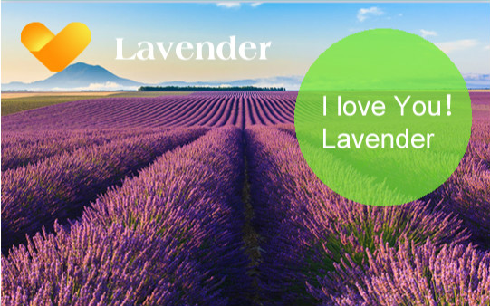

薰衣草(Lavender)为唇形花科(Labiatae),薰衣草属(Lavandula)之多年生常绿小灌木。原产于地中海沿岸地区，但也有文献报导：薰衣草原生于波斯(今之伊朗)与加那利群岛，经由腓尼基人引进到地中海滨之法国。叶片狭窄，灰绿色，茎直立，在国外夏秋季节开花，为穗状花序，花序长5-15公分，花色因品种而异有蓝，淡紫，紫，浓紫及白色等，以蓝色最普遍。
薰衣草的花语是等待爱情，每当风吹起时，一整片的薰衣草田宛如深紫色的波浪层层叠叠地上下起伏着，像是轻声跟爱人诉说着心中的情感。七月薰衣草盛开花开得正旺，花香正浓。你可以不用去普罗旺斯，不用去北海道，只要花上几个小时车程，就可以领略到那一抹梦幻的紫色，感受近在咫尺的异国情调。
北京蓝调薰衣草庄园（又名：紫香漫境薰衣草庄园），蓝调庄园，位于朝阳区金盏乡楼梓庄，占地1200亩，西靠东高路，东临小坝河，毗邻朝阳区金融服务园区的景观大道。是北京壹度创意旅游策划的，目前开发的项目以农业文化创意产业为支承，以蓝莓、草莓等特色果蔬种植为基础。生产上，以蓝莓、草莓为主栽品种，并配合其他特色果蔬种植，已发展成为当地绿色地标；生态上，园区呈现的是原生态的田园景观，为崇尚自然，渴望田园生活的市民提供了一个休闲体验的空间。整个项目力争在三年内建成，预计建成后的蓝调庄园将集特色餐饮、主题温泉、加工体验、 节庆活动等功能于一体。最终形成北京极具特色的乡村休闲庄园和北京农业休闲旅游示范基地。